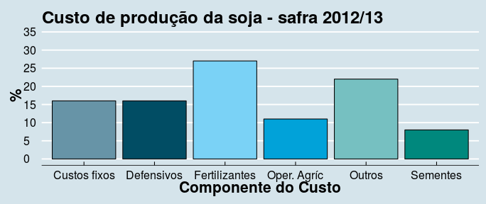

As operações mecanizadas visam a melhoria dos sistemas de produção, preconizando a agilidade e a qualidade dos processos, tendo como um dos limitadores o orçamento financeiro da empresa. Os custos das operações mecanizadas na cultura soja são de aproxidamente 11,00%

Fonte (IMEA, 2012)